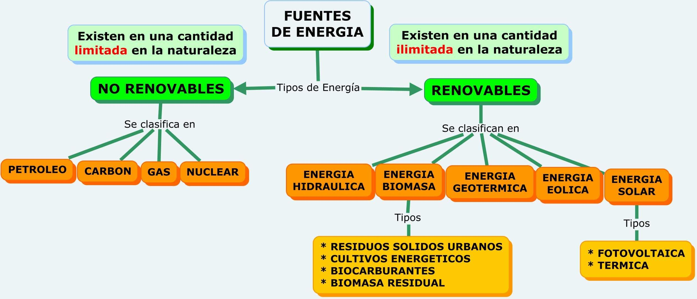

Recursos naturales: Se denominan recursos naturales a aquellos bienes materiales y servicios que proporciona la naturaleza sin alteración por parte del ser humano; y que son valiosos para las sociedades humanas por contribuir a su bienestar y desarrollo de manera directa (materias primas, minerales, alimentos) o indirecta (servicios ecológicos).
Desde que la tierra fue habitada, los seres humanos y otras formas de vida han dependido de cosas que existen libremente en la naturaleza para sobrevivir. Estas cosas incluyen agua (mares y agua dulce), tierra, suelos, rocas, bosques (vegetación), animales, combustibles fósiles y minerales. Se llaman Recursos Naturales y son la base de la vida en la tierra.
